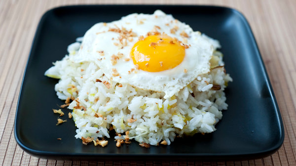

Home
Rice and Fried Eggs

Description
Pretty simple recipe for up to four portions, it is cheap and tasty, it will take
around 30 minutes for preparation but it might take less if you already have rice leftovers.
The recipe is separated in two separate preparations, rice and then eggs.
Ingredients
- Cooking Oil: seven tablespoons
- Garlic: three cloves
- Onion: half of an small piece
- Rice: two cups
- Salt: two tablespoons
- Water: four cups
Preparation
Rice:
- Heat the cooking oil in a pan
- Wash the rice
- Slice garlic and onion into small pieces
- After the oil is warm, put the garlic and onion into the pan
- Once they are slightly fried, pour the water and add salt and rice
- Leave it in a high flame until the water evaporates
- Put a lid on the pan, reduce the heat and wait 35-40 minutes until done
Eggs:
- Heat two teaspons of cooking oil in a pan
- After two minutes (with medium heat), crack two eggs into the pan
- Remove when the egg has the preferred look.
Enjoy!
Back